Características essenciais
As aranhas pertencem à classe Aracnídeos (Arachnida), o mesmo grupo dos escorpiões, ácaros e opiliões. São animais invertebrados com o corpo dividido em duas partes: o cefalotórax (cabeça unida ao tórax) e o abdômen. Possuem oito patas articuladas, geralmente oito olhos simples, e um par de quelíceras (presas inoculadoras de veneno) e de pedipalpos (apêndices sensoriais).
Não possuem antenas nem asas, e sua respiração é feita por estruturas chamadas filotraqueias ou traqueias. Na ponta do abdômen ficam as fiandeiras, glândulas que produzem o fio de seda usado para tecer teias, casulos e abrigos.
- Aranha: 2 partes do corpo · 8 patas · sem antenas · sem asas · quelíceras com veneno
- Inseto: 3 partes (cabeça, tórax, abdômen) · 6 patas · 1 par de antenas · geralmente com asas
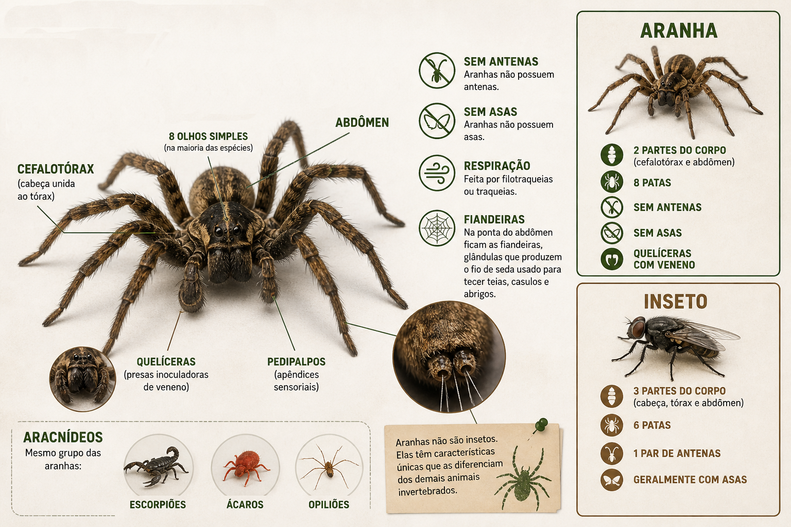
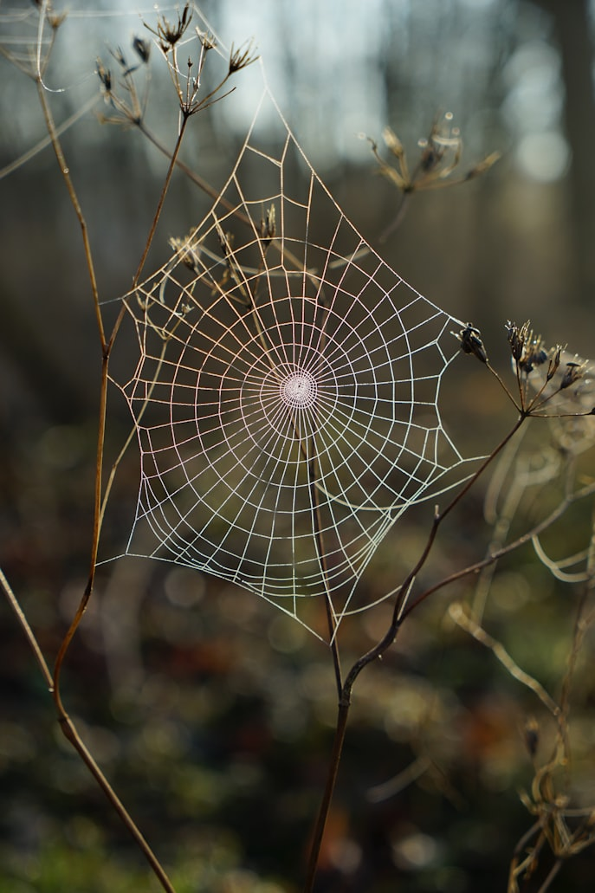
A teia e suas utilidades
A teia é, ao mesmo tempo, casa, armadilha, berçário e meio de transporte para a aranha. Com ela a aranha:
- Captura presas vivas em redes pegajosas
- Constrói abrigos, casulos e câmaras de muda
- Protege os ovos dentro de bolsas de seda (oóteca)
- Desliza no ar carregada pelo vento (ballooning)
- Sente vibrações de presas e predadores
Para o ser humano, a teia tem inúmeras utilidades: já foi usada como curativo natural (rica em vitamina K, ajuda a estancar sangramentos), em pesquisas biomédicas (regeneração de nervos, suturas), em coletes balísticos (a seda é mais resistente que o aço de mesma espessura), em fios cirúrgicos, e em retículos ópticos de microscópios e telescópios antigos.
Alguns tipos de teia
Esférica (orbicular)
Teia circular com fios radiais e espiral pegajosa. É a forma clássica, projetada para capturar insetos em voo.
Em lençol
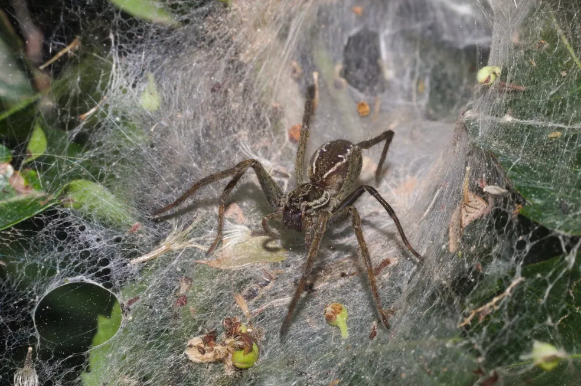
Tapete horizontal de seda esticado entre folhas. A aranha fica embaixo e puxa as presas que tropeçam.
Em funil
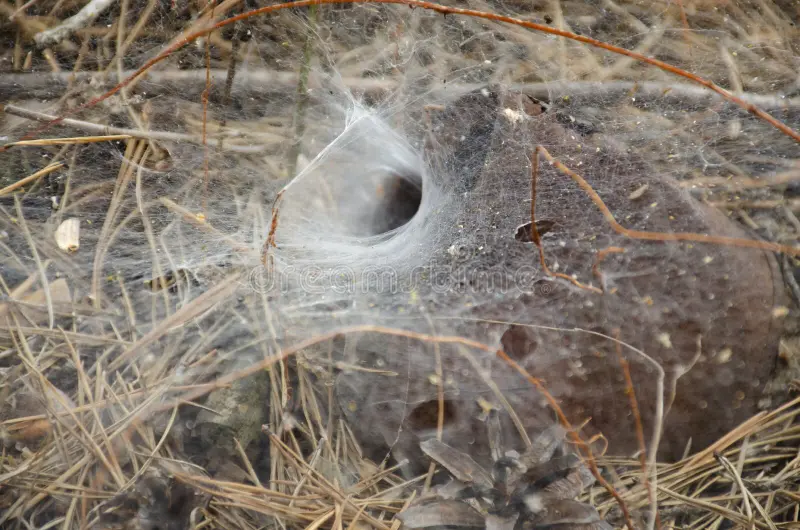
Forma um cone que se afina até um abrigo onde a aranha espreita e ataca rapidamente.
Em tubo
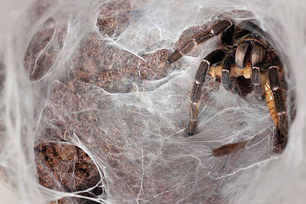
Galeria de seda dentro de um buraco no solo ou em fendas, típica das tarântulas.
Emaranhada
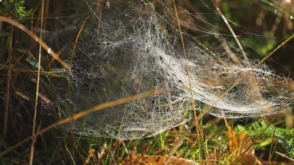
Fios desorganizados em três dimensões. Comum nas viúvas-negras (gênero Latrodectus).
De alçapão
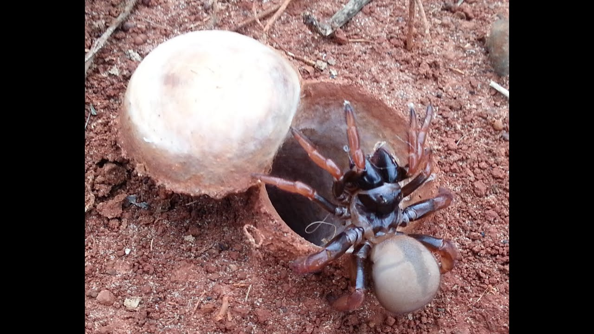
Aranha cava um buraco e fecha com uma tampa de seda e terra; pula sobre a presa.
De rede de arremesso
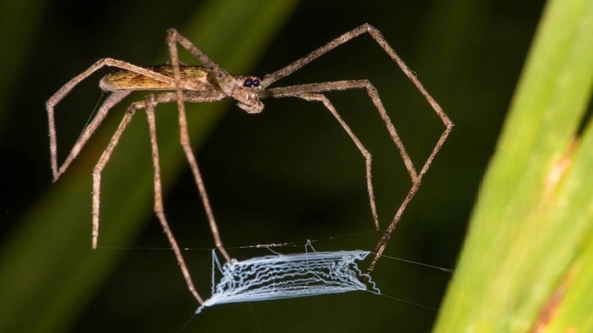
A aranha tece uma pequena teia entre as patas e a lança como rede sobre a vítima.
Do que se alimentam?
As aranhas são carnívoras e se alimentam quase exclusivamente de presas vivas. Como não possuem mandíbulas para mastigar, injetam enzimas digestivas na presa e depois sugam o conteúdo já liquefeito.
Em uma observação simples de teias, é comum encontrar:
- Moscas, mosquitos e pernilongos
- Mariposas e borboletas pequenas
- Besouros, gafanhotos e grilos
- Formigas aladas e cupins
- Abelhas e vespas (em teias maiores)
- Outras aranhas menores
Algumas aranhas grandes, como a Goliath, chegam a capturar pequenos lagartos, anfíbios e até filhotes de pássaros.
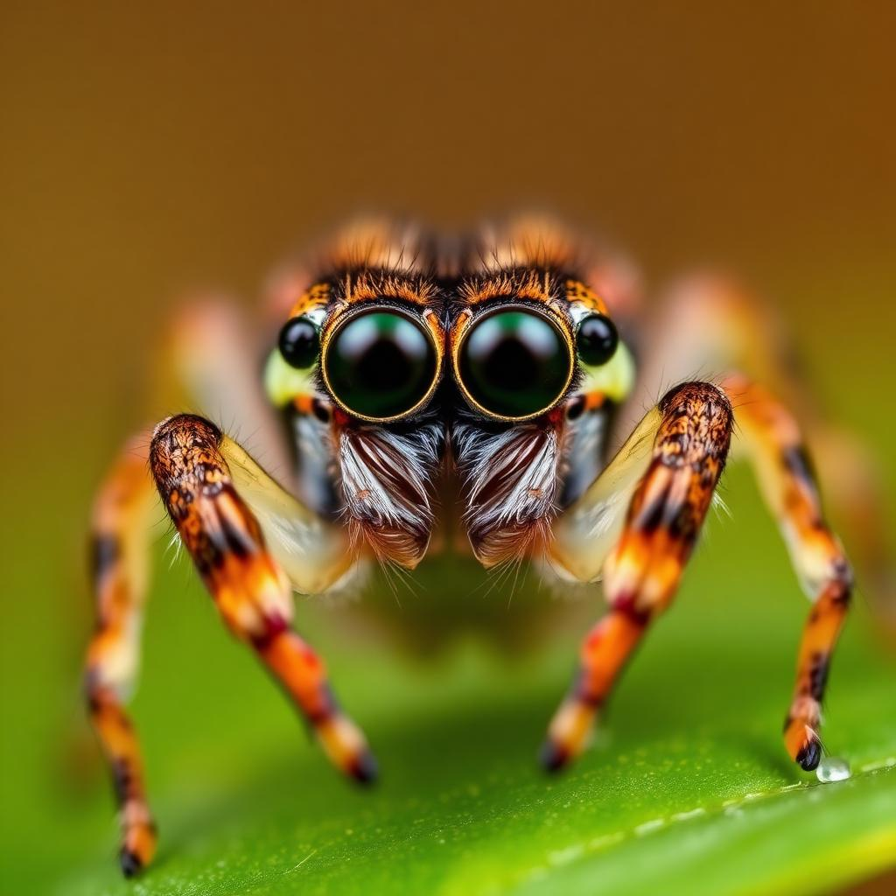
Predadores e o grande inimigo
Apesar de temidas, as aranhas têm muitos predadores naturais:
- Vespas caçadoras (como a Pepsis, que paralisa tarântulas)
- Pássaros insetívoros (joão-de-barro, bem-te-vi, beija-flor)
- Lagartos, sapos e camaleões
- Outras aranhas (canibalismo é comum)
- Centopeias e escorpiões
Mas o principal inimigo das aranhas é o próprio ser humano: pelo medo cultural, milhões são mortas todos os anos sem necessidade. Além disso, o uso de agrotóxicos, o desmatamento e a urbanização destroem seus habitats — eliminando aliadas naturais no controle de insetos.
A maior aranha do mundo
O título de maior aranha do mundo em massa e tamanho corporal pertence à Goliath comedora-de-pássaros (Theraphosa blondi), que vive nas florestas tropicais do norte da América do Sul, incluindo a Amazônia brasileira.
Apesar do nome assustador, raramente come pássaros — sua dieta é feita de insetos, anfíbios e pequenos roedores. Seu veneno é fraco para humanos, mas seus pelos urticantes irritam pele e olhos.
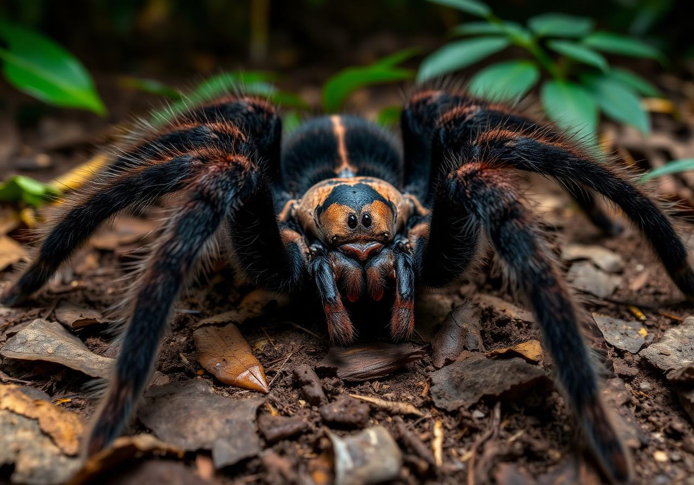
Aranhas conhecidas pelo Brasil e o mundo
Existem mais de 50 mil espécies catalogadas de aranhas no mundo, e o Brasil abriga cerca de 4.000 delas. Veja algumas das mais conhecidas:
Aranha-armadeira
Phoneutria nigriventer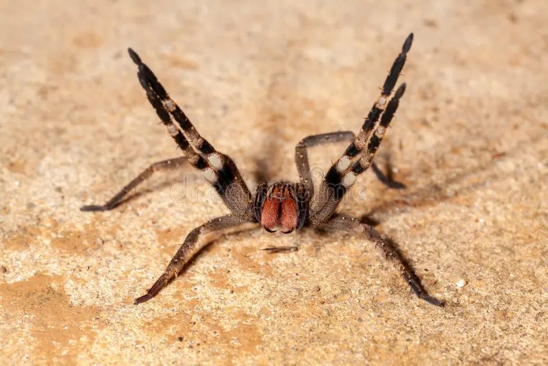
Agressiva, levanta as patas dianteiras quando ameaçada. Veneno neurotóxico potente. Comum no Sudeste do Brasil.
Aranha-marrom
Loxosceles spp.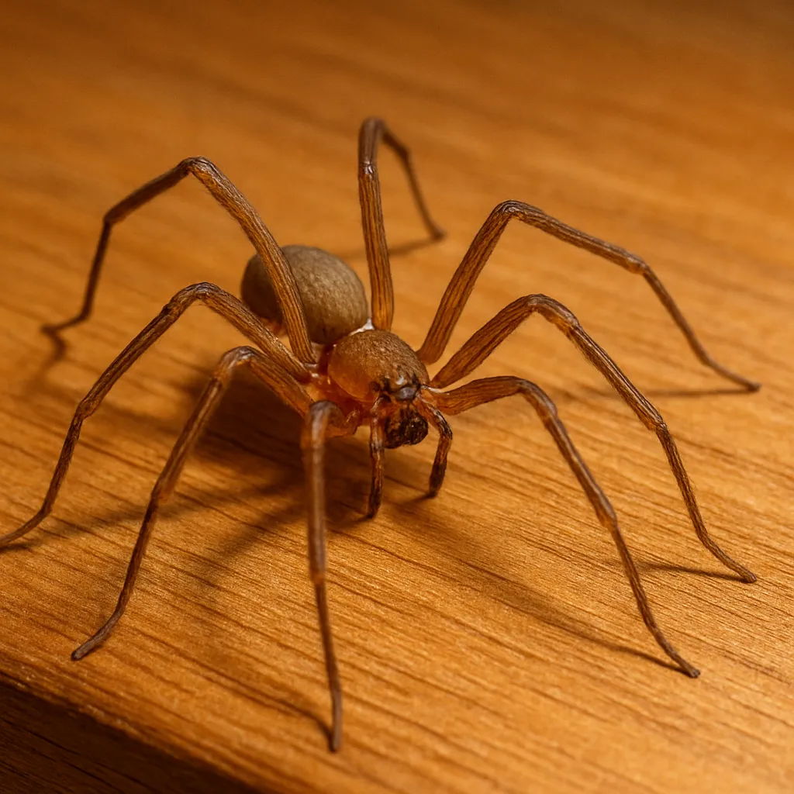
Pequena e tímida, esconde-se em locais escuros. Picada provoca necrose da pele. Comum no Sul.
Viúva-negra
Latrodectus spp.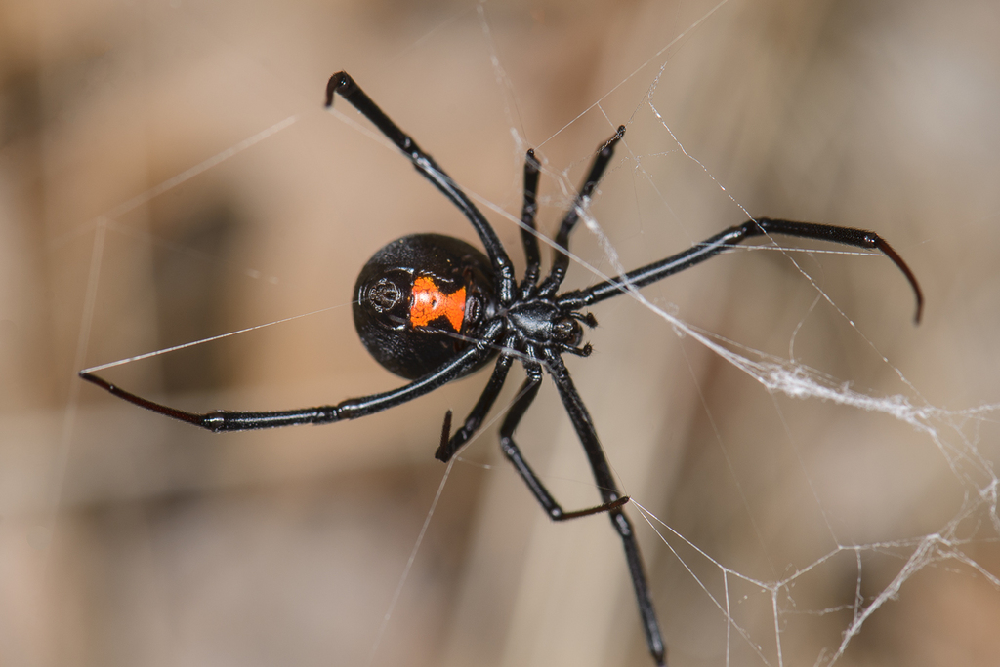
Pequena, preta, com mancha vermelha no abdômen. Veneno neurotóxico. Litoral brasileiro.
Caranguejeira
família Theraphosidae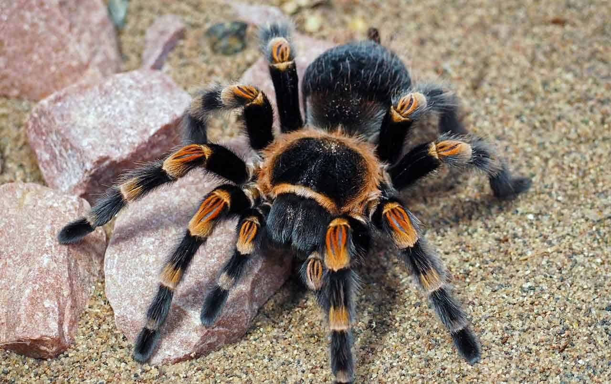
Grande, peluda, pouco agressiva. Veneno fraco; pelos urticantes. Vive em tocas no chão.
Aranha-de-jardim
Argiope spp.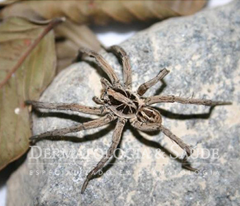
Tece teia orbicular com zigue-zague (estabilimento). Inofensiva e excelente controladora de insetos.
Aranha-saltadora
família SalticidaeOlhos enormes, salta sobre presas. Não tece teia para caçar. Pequena e curiosa.
Aranha-cruzeiro
Araneus diadematus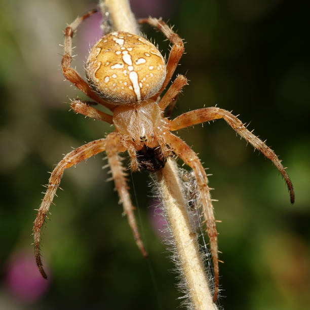
Cruz branca no dorso. Tece grandes teias orbiculares em jardins.
Aranha-de-grama
Lycosa spp.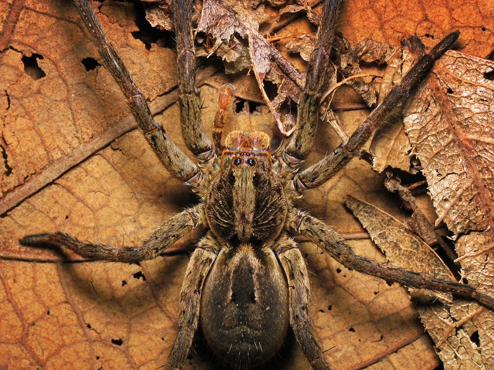
Caça correndo no chão. Carrega filhotes nas costas.
Aranha-papa-mosca
Plexippus paykulli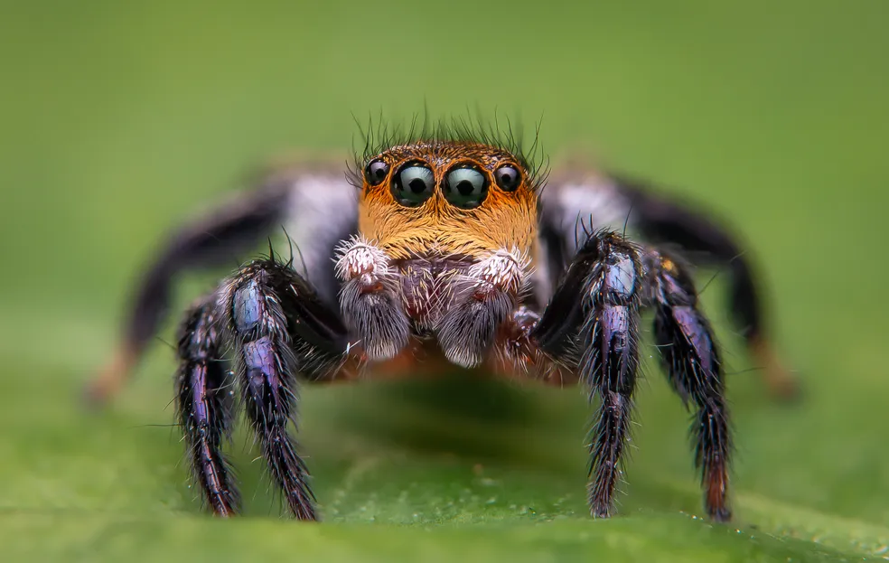
Saltadora urbana, frequenta paredes e tetos de casas, caçando moscas.
Aranha-d'água
Argyroneta aquatica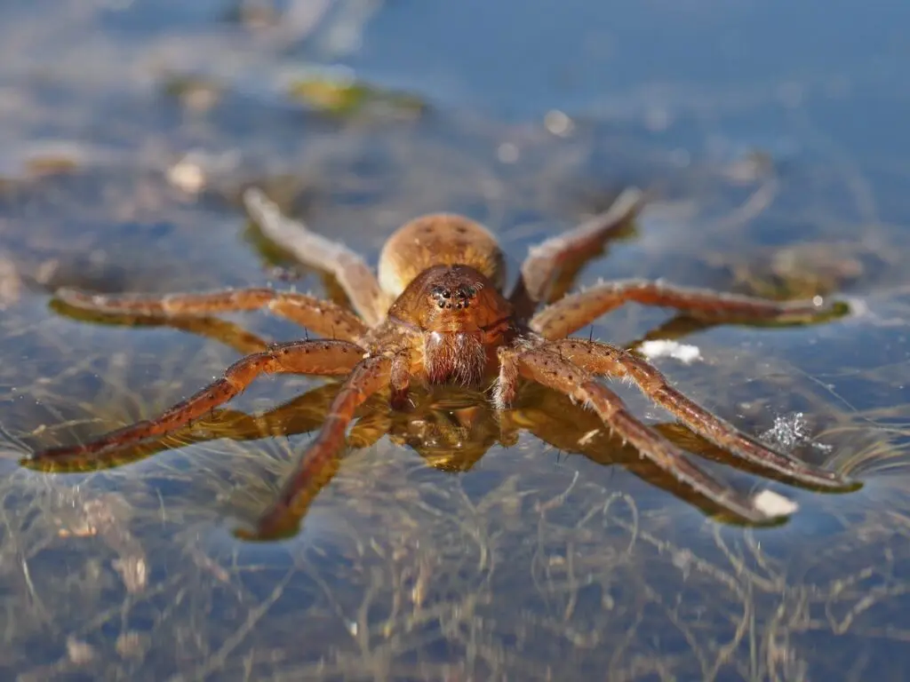
Única que vive embaixo d'água, dentro de uma "bolha" de seda cheia de ar.
Tecedeira-de-ouro
Trichonephila clavipes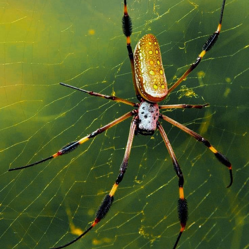
Tece teias gigantes douradas. Sua seda é estudada pela ciência.
Aranha-pavão
Maratus volans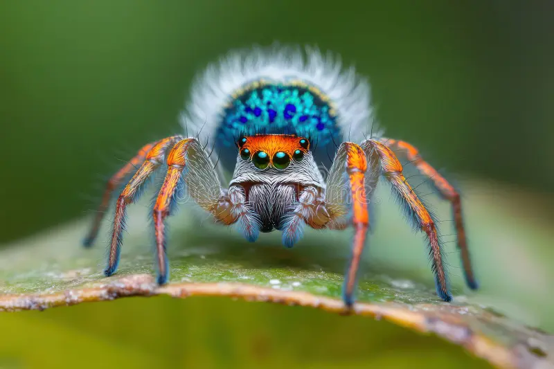
Macho exibe abdômen colorido em dança nupcial. Da Austrália.
Tarântula-azul-cobalto
Cyriopagopus lividus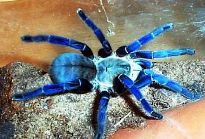
Belíssimo azul metálico. Vive em tocas no Sudeste Asiático.
Aranha-violinista
Loxosceles reclusa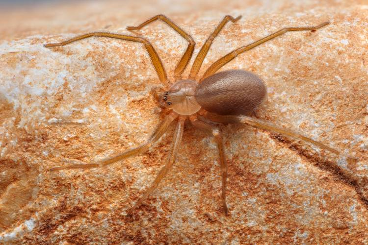
Marca em forma de violino no cefalotórax. Reclusa, perigosa.
Aranha-de-porão
Pholcus phalangioides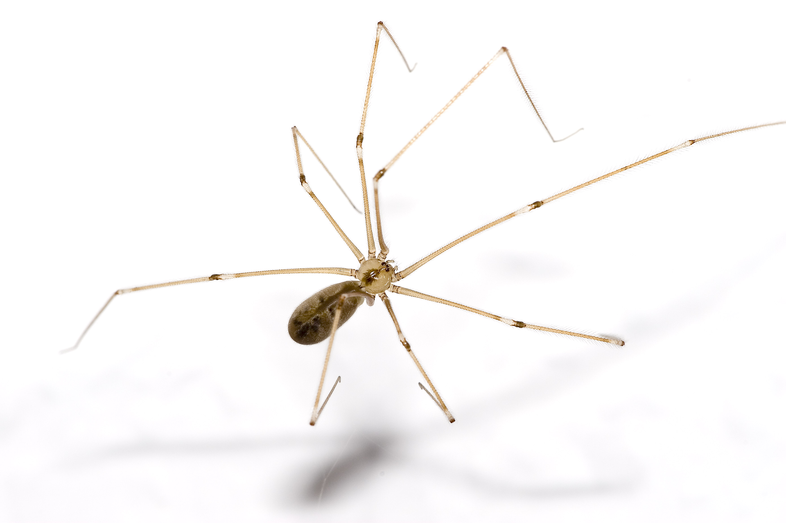
Corpo pequeno e pernas extremamente longas e finas. Vive em cantos de casas, fazendo teias irregulares. Inofensiva e ajuda a capturar insetos.
Aranha-pescadora
Dolomedes spp.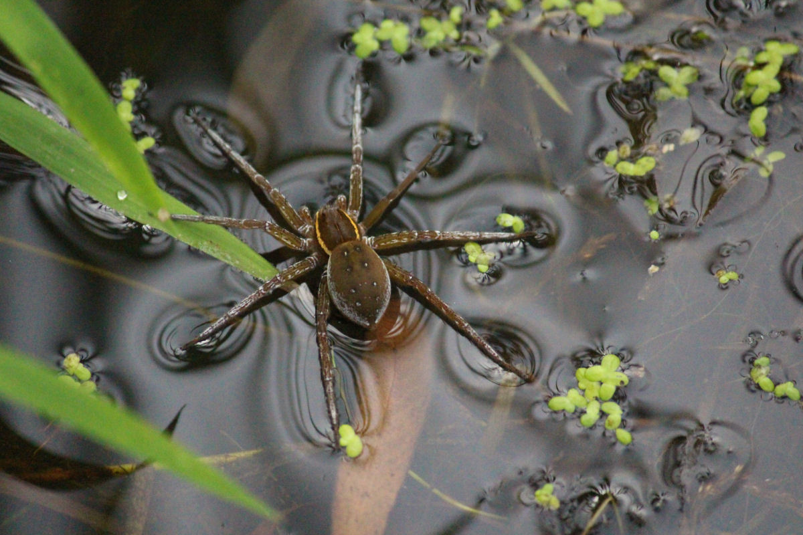
Vive próxima à água e pode andar sobre sua superfície. Caça insetos e até pequenos peixes. Não é agressiva e raramente oferece risco ao ser humano.
Aranha-armadeira (Phoneutria nigriventer)
A aranha-armadeira é uma das espécies mais conhecidas do Brasil, comum em bananeiras, lenhas e sapatos deixados no quintal. Seu nome vem do comportamento de "se armar": quando ameaçada, levanta as patas dianteiras e se apoia nas traseiras, exibindo as quelíceras avermelhadas. Pode atingir até 17 cm de envergadura. Possui veneno neurotóxico extremamente ativo, sendo responsável por boa parte dos acidentes aracnídeos no país. Apesar disso, raramente ataca sem ser provocada, e o soro antiaracnídico produzido pelo Instituto Butantan salva milhares de vidas todos os anos.
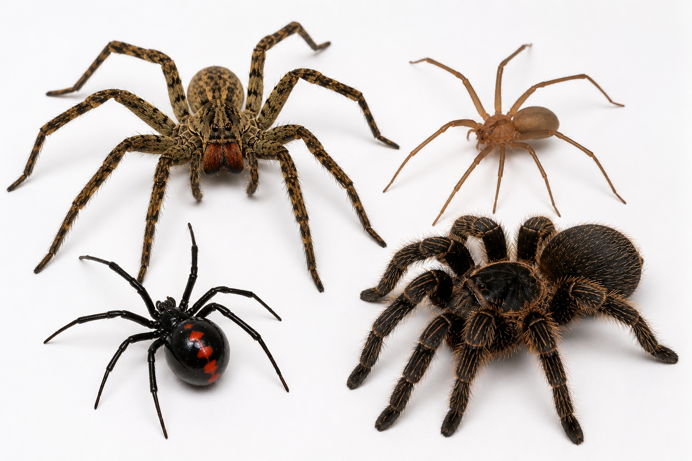
Aranhas venenosas
Praticamente todas as aranhas possuem veneno — ele faz parte do mecanismo de caça. Mas, das mais de 50 mil espécies, apenas cerca de 30 a 50 são realmente perigosas para o ser humano.
No Brasil, as de importância médica são quatro grupos:
- Armadeira (Phoneutria) — neurotóxica
- Marrom (Loxosceles) — necrosante
- Viúva-negra (Latrodectus) — neurotóxica
- Caranguejeiras — pouco perigosas, pelos urticantes
O que fazer em caso de picada
- Mantenha a calma e a vítima em repouso, com o membro picado elevado.
- Lave o local com água e sabão; evite cortes, sucção ou torniquetes.
- Aplique compressas mornas para aliviar a dor (frio piora algumas picadas).
- Se possível, capture ou fotografe a aranha para identificação.
- Procure imediatamente o serviço de saúde mais próximo — o soro existe e é gratuito.
- Em caso de emergência no Brasil, ligue para o SAMU 192 ou CIATox.
Aranhas: amigas ou inimigas?
Benefícios ao homem:
- Controlam pragas — uma única aranha consome até 2.000 insetos por ano
- Reduzem a necessidade de inseticidas químicos na lavoura
- Veneno usado em pesquisas para analgésicos, antibióticos e tratamentos de AVC
- Seda inspira novos materiais (biotêxteis, suturas, coletes)
- Indicadoras de saúde ambiental — sua presença sinaliza ecossistemas equilibrados
Prejuízos ao homem:
- Algumas espécies provocam acidentes graves (armadeira, marrom, viúva-negra)
- Podem causar reações alérgicas em pessoas sensíveis
- Teias em ambientes domésticos podem acumular sujeira e ácaros
Você sabia?
- O fio da aranha é tão fino que um fio do tamanho do diâmetro da Terra pesaria menos de 500 gramas.
- As aranhas não são surdas — sentem o som pelas vibrações no ar e no chão.
- Algumas espécies "voam" centenas de quilômetros usando teias como balão.
- O coração da aranha bate a ritmo lento — cerca de 30 batidas por minuto.
- Existe uma aranha quase vegetariana: a Bagheera kiplingi, que se alimenta de brotos de acácia.
- A seda da aranha é mais resistente que o aço de mesma espessura e extremamente elástica.
- Aranhas não têm músculos para esticar as pernas — elas usam pressão hidráulica do próprio corpo para se movimentar.
- Muitas aranhas enxergam muito mal, mas compensam com extrema sensibilidade a vibrações.
- Algumas aranhas imitam formigas na aparência e no comportamento para enganar predadores e se aproximar de presas.
- As aranhas passam por várias mudas ao longo da vida, abandonando o exoesqueleto antigo para crescer.
Referências bíblicas
A Palavra de Deus, escrita há milênios, já mencionava as aranhas com observações ricas e atuais — mais uma evidência da sabedoria que vem do Criador.
Em todas essas passagens, a aranha aparece como símbolo de fragilidade humana diante da eternidade, mas também como exemplo de sabedoria e perseverança — um pequeno animal que habita até os palácios dos reis.
Nota: Em Provérbios 30:28, algumas traduções da Bíblia utilizam a palavra “lagartixa” em vez de “aranha”. Isso ocorre porque o termo hebraico original (semamith) possui significado incerto. Enquanto algumas versões mantêm “aranha” por tradição, outras optam por “lagartixa”, um pequeno animal comum em paredes e interiores. Ambas as leituras preservam a mesma ideia central do texto: um ser pequeno, habilidoso e capaz de estar até nos palácios dos reis.
O Criador nos detalhes
Estudar as aranhas é redescobrir, em cada teia tecida ao amanhecer, as marcas de um Deus de ordem, beleza e propósito. Que cada desbravador, ao concluir esta especialidade, possa olhar para essas pequenas criaturas com o respeito e a admiração que elas merecem — e, sobretudo, glorificar Aquele que as fez.